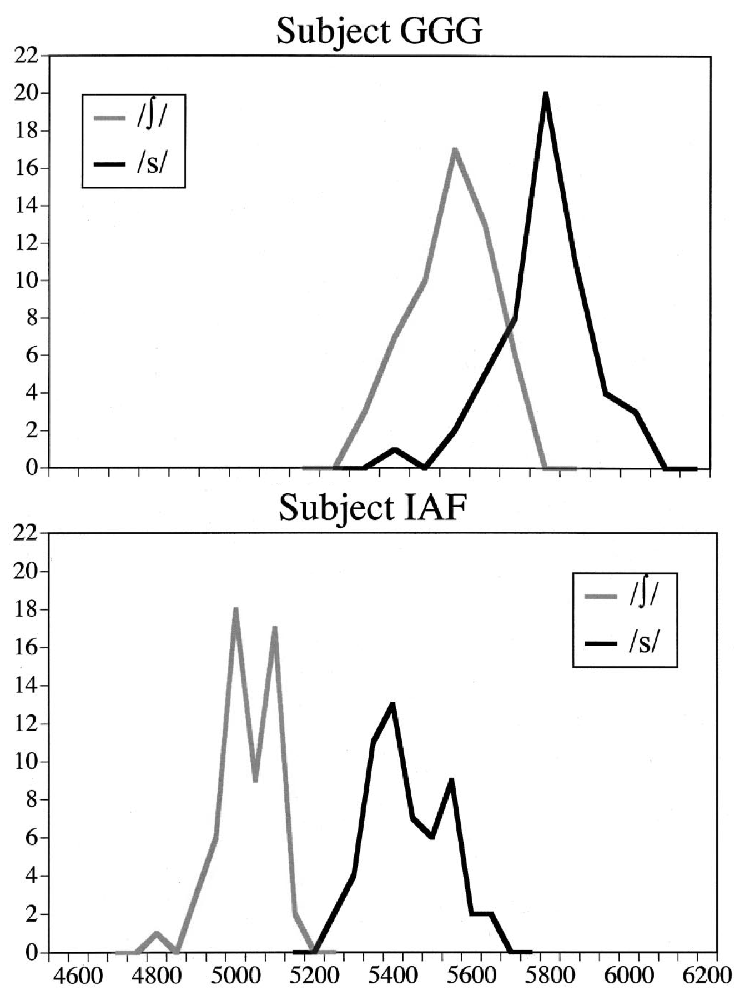

What do you expect from an unfamiliar talker?
Dave F. Kleinschmidt and T. Florian Jaeger
University of Rochester
@kleinschmidt / davekleinschmidt.com / github.com/kleinschmidt
Thanks
- Florian Jaeger
- Meghan Clayards (stimuli)
- Andrew Watts (MTurk wizardry)
- HLP Lab
- Funding
- NIH NICHD R01 to TFJ and NRSA to DFK
Goals (spoiler alert)
- Speech perception as inference under uncertainty at multiple scales
- Framework to link production data with perception
- Constraints on rapid adaptation via distributional learning
- Probe listeners’ subjective beliefs about an unfamiliar talker
Variation
is a problem for speech perception


[Newman, Clouse, & Burnham, 2001]

[Newman, Clouse, & Burnham, 2001]
An unfamiliar talker appears!
Listeners have to simultaneously infer what the talker is saying and how they say things
An ideal adpater rapidly adapts to an unfamiliar talker via distributional learning
[Kleinschmidt & Jaeger, 2015]
Distributional learning needs to start somewhere
(prior beliefs in Bayesian jargon)
Scylla and Charybdis
Too much uncertainty
Overconfident and wrong
Ideal adapter predicts:
- An ideal adapter won’t always adapt
- Adaptation is constrained, guided by actual variability across talkers (as experienced by each listener).
- Accents that fall outside the range of normal variability should result in less adaptation.
Questions
- Is rapid adaptation to an unfamiliar talker constrained?
- Are constraints consistent with belief updating, starting from shared prior beliefs?
- Are these inferred prior beliefs ‘rational’ in that they reflect cross-talker variation?
Experiment
VOT drawn from a bimodal distribution
Distributional learning
[Clayards et al., 2008]
Design

- Five “accents” with different VOT distributions
- \(n=138\) subjects on Mechanical Turk
- 222 trials (about 20 minutes)
Prediction: no learning
Prediction: full learning
Results: classification
Results: category boundaries
Questions
- Is rapid adaptation to an unfamiliar talker constrained?
- Yes: Less adaptation to extreme accents
- Are constraints consistent with belief updating, starting from shared prior beliefs?
- Are these inferred prior beliefs ‘rational’ in that they reflect cross-talker variation?
Modeling
Belief updating
Previously: given exposure distributions and prior beliefs, predict adaptation (change in classification)
Now: given adaptation (change in classification) to different exposure distributions, infer prior beliefs.
[Kleinschmidt & Jaeger, 2015]
Questions
- Is rapid adaptation to an unfamiliar talker constrained?
- Yes: Less adaptation to extreme accents
- Are constraints consistent with belief updating, starting from shared prior beliefs?
- Are these inferred prior beliefs ‘rational’ in that they reflect cross-talker variation?
Model vs. data: classification
Model vs. data: classification
Questions
- Is rapid adaptation to an unfamiliar talker constrained?
- Yes: Less adaptation to extreme accents
- Are constraints consistent with belief updating, starting from shared prior beliefs?
- Yes: Belief updating model fits classification well
- Are these inferred prior beliefs ‘rational’ in that they reflect cross-talker variation?
Inferred prior beliefs
[Wedel, in prep]
Inferred prior beliefs
[Wedel, in prep]
Inferred prior beliefs
[Wedel, in prep; Goldrick, Vaughn, & Murphy, 2013]
Questions
- Is rapid adaptation to an unfamiliar talker constrained?
- Yes: Less adaptation to extreme accents
- Are constraints consistent with belief updating, starting from shared prior beliefs?
- Yes: Belief updating model fits classification well
- Are these inferred prior beliefs ‘rational’ in that they reflect cross-talker variation?
- Yes(-ish): Prevoicing potentially explains low expected /b/ VOT
Conclusion
Distributional learning is constrained
- Things that can’t be the whole story to coping with talker variation:
- Rapid adaptation
- Fine-grained episodic memory
- Normalization
There are other possible sources of constraints!
- Psychoacoustics
- Own production processes
- etc.
The ideal adapter
- Provides a theory for why and how the statistics of prior experience guide (and constrain) adaptation
- …and supports extraction of social information from the speech signal
Other contrasts and groups
- Ideal adapter predictions depend on type and amount of cross-talker variability.
- (relatively) weaker constraints for more variable contrasts (e.g., fricatives and vowels)
- (relatively) stronger constraints for more specific groups (e.g., gender and dialect)
Mind reading
- Probing listeners’ subjective expectations is hard.
- Adaptation + belief updating models provide a missing tool.
- Doesn’t require production data.
Findings
- Rapid adaptation via distributional learning is constrained
- Proof of concept: recover listeners prior beliefs about unfamiliar talkers
- Provides a new tool that links (sociolinguistic) variation in production with listeners’ perception expectations
Extra slides
Does anyone actually prevoice

[Dmitrieva et al., 2015, doi:10.1016/j.wocn.2014.12.005]
Belief updating